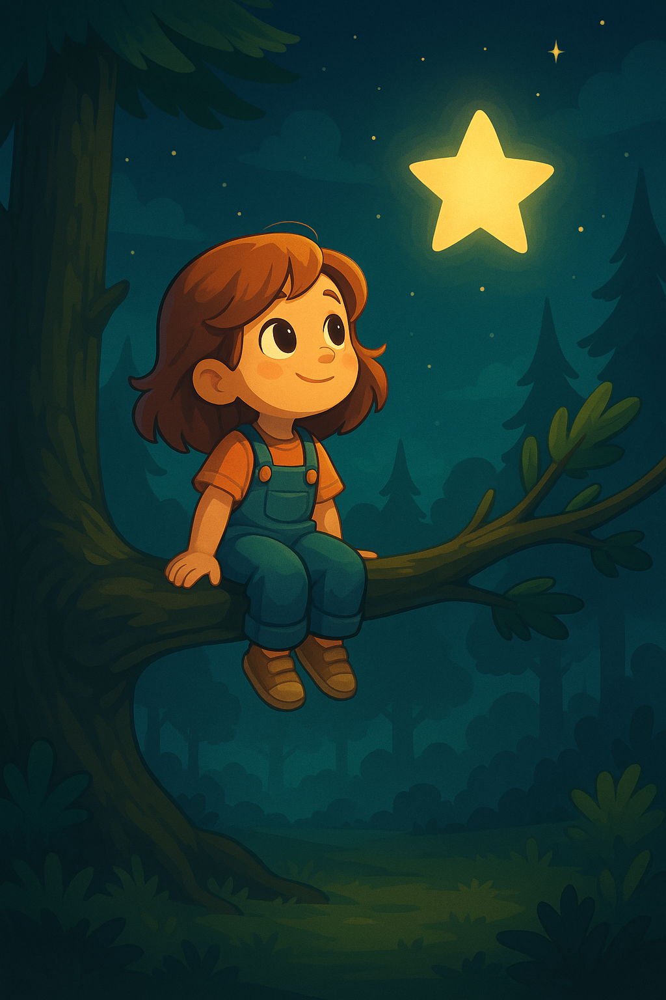

Im dicht bewachsenen Lindenwald sprang Mila, ein quirliges Eichhörnchen, zwischen Zweigen umher. Jede Nacht kletterte sie zum höchsten Ast, um die Sterne zu zählen. Doch heute funkelte ein Licht heller als alle anderen – ein silberner Stern, der direkt über einer alten Buche stand.
Fasziniert huschte Mila hinab zur Buche. Dort traf sie Rainer, den wissbegierigen Dachs. „Hast du das gesehen?“, flüsterte sie und wies zum Himmel. Rainer nickte und erklärte: „Man sagt, nachts fliegt hier ein Waldgeist, der Wünsche erfüllt. Er zeigt sich als silberner Stern.“
Mila dachte kurz nach. Dann wünschte sie sich: „Ich möchte allen Tieren eine gute Nacht bereiten.“ Plötzlich begann der Baum zu leuchten – seine Rinde glänzte silbern, und feiner Nebel stieg empor. Aus dem Nebel erschien ein zarter Waldgeist mit funkelnden Augen.
Der Geist lächelte: „Dein Wunsch ist rein. Ich schenke jedem Tier im Wald einen Moment des Glücks.“ Er breitete seine Arme aus, und aus dem Nebel erschienen kleine Lichter, die zu allen Ecken des Waldes flogen. Dort berührten sie die Schlafplätze von Mäusen, Rehen, Käfern und Vögeln.
Mit jedem Lichtstrahl fühlten sich die Tiere geborgen: Der Mäusefamilie erschien ein Traum von riesigem Käse, den Rehen träumten von sonnendurchfluteten Wiesen, den Käfern tanzten bunte Farben vor den Augen, und den Vögeln sang der Wind ein Wiegenlied.
Mila und Rainer sahen gebannt zu. Dann begann der silberne Stern am Himmel zu verblassen. Der Geist verschmolz mit dem Sternenlicht und verschwand – doch sein Zauber blieb. Ein leiser Windhauch flüsterte: „Gute Nacht, Wald.“ Glücklich ließ Mila sich in ihrem Nest nieder. Über ihr funkelte der Nachthimmel, und tief unten in der Buche glühte ein Punkt, der an den silbernen Stern erinnerte. Zufrieden schlief sie ein, während der Wald in friedlichen Träumen versank.